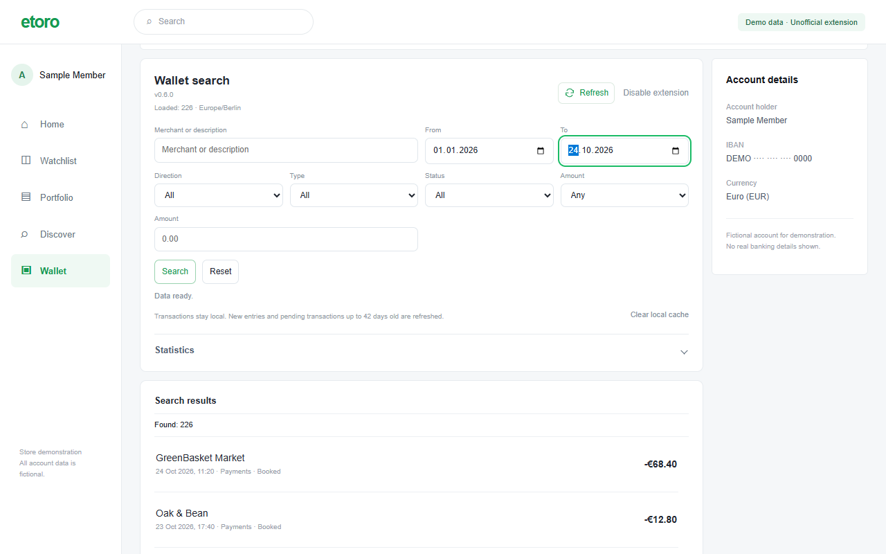
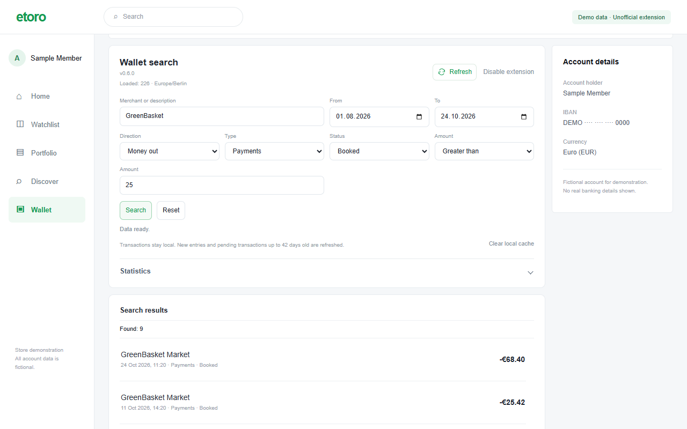
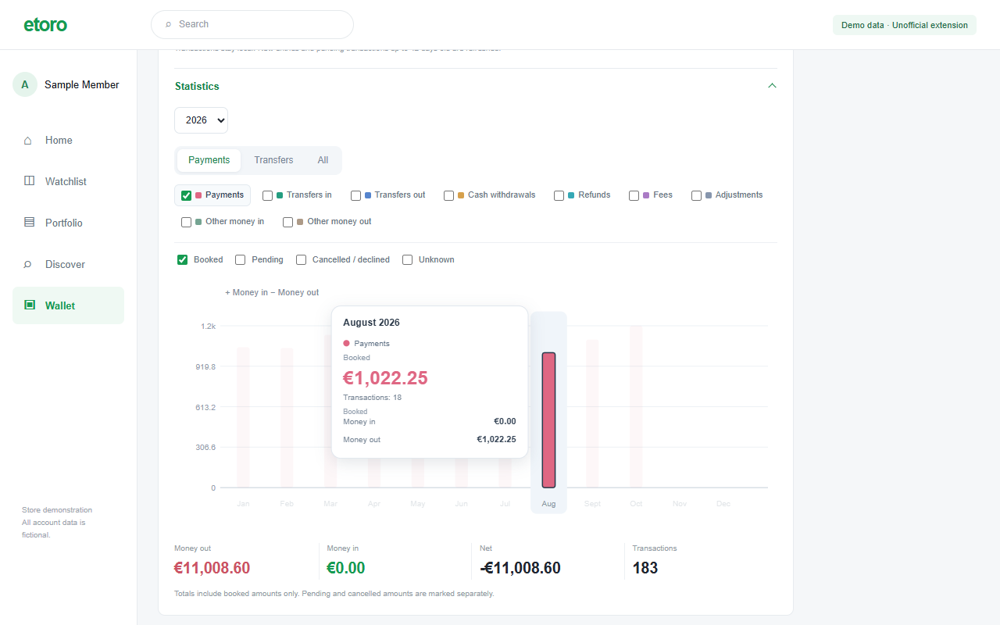

Search the details
Combine merchant or description with dates, amounts, money in or out, transaction type and status.
An independent extension for eToro Wallet
Search inside eToro Wallet by merchant, date or amount. Separate card payments from transfers and explore your monthly spending.
Free for noncommercial use · v0.6.0
Chrome Web Store listing is being prepared.
A search panel inside your existing Wallet, with the filters and totals you need to make sense of your history.
Combine merchant or description with dates, amounts, money in or out, transaction type and status.
Open Statistics for yearly totals and monthly bars. Switch categories on or off, then hover or focus a bar for the numbers.
Saved history appears immediately. New dates and eligible unresolved entries are checked in the background. Refresh remains available.

Actual v0.6.0 extension UI in a reconstructed Wallet environment. All account details and transactions shown are fictional.


Designed around local data
The publisher receives no transaction dataset. There is no developer analytics, advertising or backup service. Fresh history is requested directly from eToro using your existing session.
Read how data is handled →A signed-in eToro Wallet account is required. The current release can be loaded as an unpacked Chrome extension.
Get the extension ZIP from Releases and extract it into a folder you will keep.
Open chrome://extensions, enable Developer mode, choose “Load unpacked”, and select the folder containing manifest.json.
Sign in to eToro and open Wallet → EUR Account. Existing cached history appears first; the extension then checks for updates.
No transaction dataset is uploaded to a developer service. Records are processed and cached locally. eToro and its export provider still handle the requests used to retrieve history. This project website is hosted by GitHub Pages.
Searching already cached records happens locally. Loading new history and checking updates require a connection to eToro. There is no separate developer data backend.
The extension has no payment, transfer, trading or account-setting functions. It adds search and statistics to Wallet. Existing eToro controls remain available.
The source is available under PolyForm Noncommercial 1.0.0. Use, changes and sharing are permitted for the purposes described by that license. Commercial use outside those permissions requires a separate written agreement. Commercial licensing details →